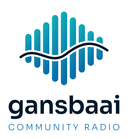
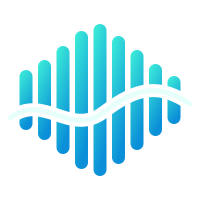
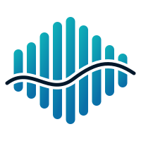
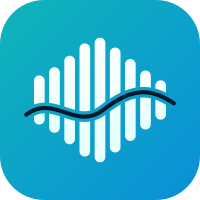
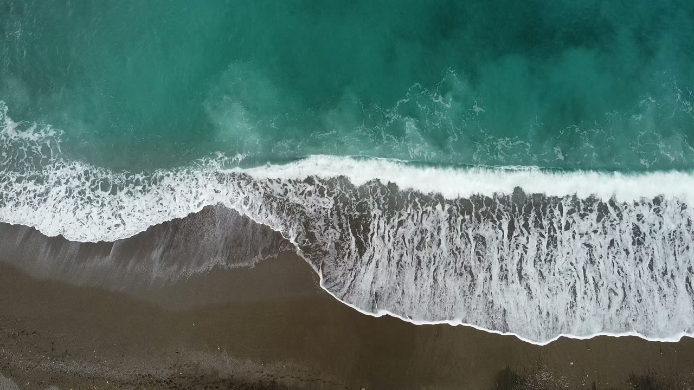

Open the site design: home, line-up and contact →
The logo is Swell: sound bars that rise and fall like the sea, with a line of white foam running through them. The name is set in Sora. Every file comes as an editable SVG (lettering as outlines) and a transparent PNG. See README.md for which to use where. The top of this page is a preview of the home page hero with the video loop.
Logos
gbcr-logo-horizontal
gbcr-logo-horizontal-light-bg
gbcr-logo-horizontal-white
gbcr-logo-horizontal-black
gbcr-logo-stacked

gbcr-logo-stacked-light-bg
gbcr-wordmark
gbcr-wordmark-light-bg
The Swell mark on its own

gbcr-mark

gbcr-mark-light-bg
gbcr-mark-white
gbcr-mark-black
Icons
gbcr-app-icon

gbcr-app-icon-teal
gbcr-favicon (96, 32 and 16 px)
apple-touch-icon-180
Hero video
A 21-second loop of five slow-motion sea clips (free Pexels stock): waves from above, rocks in the surf, a fishing boat, kelp in the waves and the rocky shore. It loops without a jump. Files are in stations/gansbaai/site/hero/.
gbcr-hero-1280.mp4 (3.9 MB) and gbcr-hero-854.mp4 (2.1 MB, phones)

gbcr-hero-poster.jpg (shown while the video loads, and to people who turn motion off)
Colours
Midnight sea #03182B
Deep blue #0A6FA8
Boat blue #0A8FD8
Turquoise #0FB5BA
Neon surf #3EF0D8
Foam #E6FFFB
On-air coral #FF5A4E